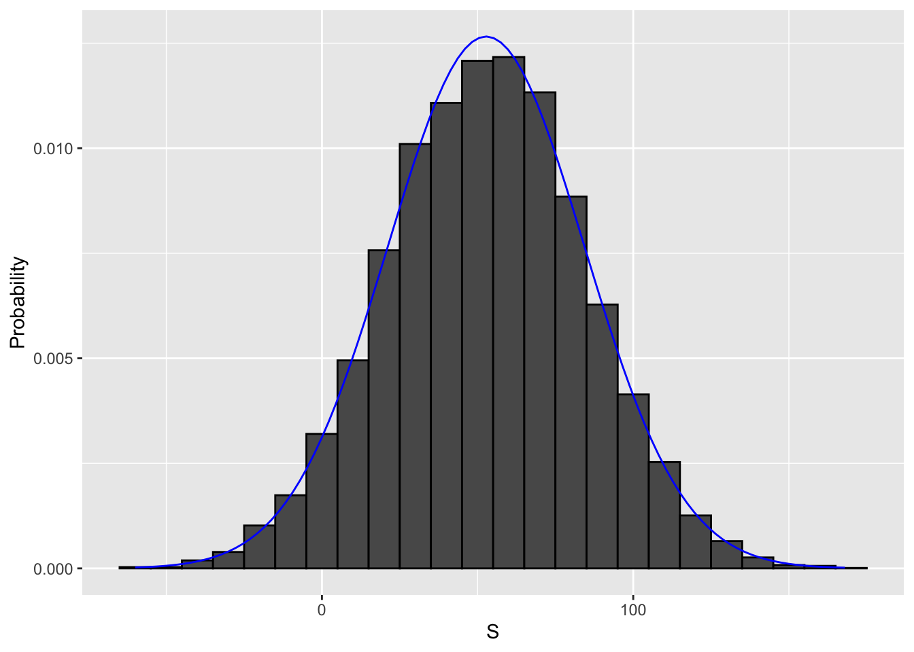

4 Section 3 Overview
Section 3 introduces you to Random Variables, Sampling Models, and the Central Limit Theorem.
Section 3 is divided into two parts:
- Random Variables and Sampling Models
- The Central Limit Theorem.
After completing Section 3, you will:
- understand what random variables are, how to generate them, and the correct mathematical notation to use with them.
- be able to use sampling models to estimate characteristics of a larger population.
- be able to explain the difference between a distribution and a probability distribution.
- understand the Central Limit Theorem and the law of large numbers.
4.1 Random variables
The textbook for this section is available here.
Key points
- Random variables are numeric outcomes resulting from random processes.
- Statistical inference offers a framework for quantifying uncertainty due to randomness.
Code: Modeling a random variable
# define random variable x to be 1 if blue, 0 otherwise
beads <- rep(c("red", "blue"), times = c(2, 3))
x <- ifelse(sample(beads, 1) == "blue", 1, 0)
# demonstrate that the random variable is different every time
ifelse(sample(beads, 1) == "blue", 1, 0)## [1] 0ifelse(sample(beads, 1) == "blue", 1, 0)## [1] 1ifelse(sample(beads, 1) == "blue", 1, 0)## [1] 14.2 Sampling Models
The textbook for this section is available here.
Key points
- A sampling model models the random behavior of a process as the sampling of draws from an urn.
- The probability distribution of a random variable is the probability of the observed value falling in any given interval.
- We can define a CDF \(F(a) = \mbox{Pr}(S \le a)\) to answer questions related to the probability of S being in any interval.
- The average of many draws of a random variable is called its expected value.
- The standard deviation of many draws of a random variable is called its standard error.
Monte Carlo simulation: Chance of casino losing money on roulette
We build a sampling model for the random variable \(S\) that represents the casino’s total winnings.
# sampling model 1: define urn, then sample
color <- rep(c("Black", "Red", "Green"), c(18, 18, 2)) # define the urn for the sampling model
n <- 1000
X <- sample(ifelse(color == "Red", -1, 1), n, replace = TRUE) # 1000 draws from urn, -1 if red, else +1
X[1:10] # first 10 outcomes## [1] 1 1 -1 -1 -1 1 1 -1 1 1# sampling model 2: define urn inside sample function by noting probabilities
x <- sample(c(-1, 1), n, replace = TRUE, prob = c(9/19, 10/19)) # 1000 independent draws
S <- sum(x) # total winnings = sum of draws
S## [1] 74We use the sampling model to run a Monte Carlo simulation and use the results to estimate the probability of the casino losing money.
n <- 1000 # number of roulette players
B <- 10000 # number of Monte Carlo experiments
S <- replicate(B, {
X <- sample(c(-1,1), n, replace = TRUE, prob = c(9/19, 10/19)) # simulate 1000 roulette spins
sum(X) # determine total profit
})
mean(S < 0) # probability of the casino losing money## [1] 0.0447We can plot a histogram of the observed values of S as well as the normal density curve based on the mean and standard deviation of S.
s <- seq(min(S), max(S), length = 100) # sequence of 100 values across range of S
normal_density <- data.frame(s = s, f = dnorm(s, mean(S), sd(S))) # generate normal density for S
data.frame (S = S) %>% # make data frame of S for histogram
ggplot(aes(S, ..density..)) +
geom_histogram(color = "black", binwidth = 10) +
ylab("Probability") +
geom_line(data = normal_density, mapping = aes(s, f), color = "blue")
4.3 Distributions versus Probability Distributions
The textbook for this section is available here.
Key points
- A random variable \(X\) has a probability distribution function \(F(a)\) that defines \(\mbox{Pr}(X \le a)\) over all values of \(a\).
- Any list of numbers has a distribution. The probability distribution function of a random variable is defined mathematically and does not depend on a list of numbers.
- The results of a Monte Carlo simulation with a large enough number of observations will approximate the probability distribution of \(X\).
- If a random variable is defined as draws from an urn:
- The probability distribution function of the random variable is defined as the distribution of the list of values in the urn.
- The expected value of the random variable is the average of values in the urn.
- The standard error of one draw of the random variable is the standard deviation of the values of the urn.
4.4 Notation for Random Variables
The textbook for this section is available here.
Key points
- Capital letters denote random variables (\(X\)) and lowercase letters denote observed values (\(x\)).
- In the notation \(\mbox{Pr}(X = x)\), we are asking how frequently the random variable \(X\) is equal to the value \(x\). For example, if \(x = 6\), this statement becomes \(\mbox{Pr}(X = 6)\).
4.5 Central Limit Theorem (CLT)
The textbook for this section is available here and here.
Key points
- The Central Limit Theorem (CLT) says that the distribution of the sum of a random variable is approximated by a normal distribution.
- The expected value of a random variable, \(E \left [ X \right] = \mu\), is the average of the values in the urn. This represents the expectation of one draw.
- The standard error of one draw of a random variable is the standard deviation of the values in the urn.
- The expected value of the sum of draws is the number of draws times the expected value of the random variable.
- The standard error of the sum of independent draws of a random variable is the square root of the number of draws times the standard deviation of the urn.
Equations
These equations apply to the case where there are only two outcomes, \(a\) and \(b\) with proportions \(p\) and \(1-p\) respectively. The general principles above also apply to random variables with more than two outcomes.
Expected value of a random variable:
\(ap + b(1-p)\)
Expected value of the sum of n draws of a random variable:
\(n\) x \((ap + b(1-p))\)
Standard deviation of an urn with two values:
\(|b-a|\sqrt{p(1-p)}\)
Standard error of the sum of n draws of a random variable:
\(\sqrt n\) x \(|b-a|\sqrt{p(1-p)}\)
4.6 Assessment - Random Variables and Sampling Models
- An American roulette wheel has 18 red, 18 black, and 2 green pockets.
Each red and black pocket is associated with a number from 1 to 36. The two remaining green slots feature “0” and “00”. Players place bets on which pocket they think a ball will land in after the wheel is spun. Players can bet on a specific number (0, 00, 1-36) or color (red, black, or green).
What are the chances that the ball lands in a green pocket?
# The variables `green`, `black`, and `red` contain the number of pockets for each color
green <- 2
black <- 18
red <- 18
# Assign a variable `p_green` as the probability of the ball landing in a green pocket
p_green <- 2/(2+18+18)
# Print the variable `p_green` to the console
p_green## [1] 0.0526- In American roulette, the payout for winning on green is $17.
This means that if you bet $1 and it lands on green, you get $17 as a prize.
Create a model to predict your winnings from betting on green one time.
# Use the `set.seed` function to make sure your answer matches the expected result after random sampling.
set.seed(1)
# The variables 'green', 'black', and 'red' contain the number of pockets for each color
green <- 2
black <- 18
red <- 18
# Assign a variable `p_green` as the probability of the ball landing in a green pocket
p_green <- green / (green+black+red)
# Assign a variable `p_not_green` as the probability of the ball not landing in a green pocket
p_not_green = 1 - p_green
# Create a model to predict the random variable `X`, your winnings from betting on green. Sample one time.
X <- sample(c(-1,17), 1, replace = TRUE, prob = c(p_not_green, p_green))
# Print the value of `X` to the console
X## [1] -1- In American roulette, the payout for winning on green is $17.
This means that if you bet $1 and it lands on green, you get $17 as a prize. In the previous exercise, you created a model to predict your winnings from betting on green.
Now, compute the expected value of \(X\), the random variable you generated previously.
# The variables 'green', 'black', and 'red' contain the number of pockets for each color
green <- 2
black <- 18
red <- 18
# Assign a variable `p_green` as the probability of the ball landing in a green pocket
p_green <- green / (green+black+red)
# Assign a variable `p_not_green` as the probability of the ball not landing in a green pocket
p_not_green <- 1-p_green
# Calculate the expected outcome if you win $17 if the ball lands on green and you lose $1 if the ball doesn't land on green
17 * p_green + (-1 * p_not_green)## [1] -0.0526- The standard error of a random variable \(X\) tells us the difference between a random variable and its expected value. You calculated a random variable \(X\) in exercise 2 and the expected value of that random variable in exercise 3.
Now, compute the standard error of that random variable, which represents a single outcome after one spin of the roulette wheel.
# The variables 'green', 'black', and 'red' contain the number of pockets for each color
green <- 2
black <- 18
red <- 18
# Assign a variable `p_green` as the probability of the ball landing in a green pocket
p_green <- green / (green+black+red)
# Assign a variable `p_not_green` as the probability of the ball not landing in a green pocket
p_not_green <- 1-p_green
# Compute the standard error of the random variable
abs((17 - -1))*sqrt(p_green*p_not_green)## [1] 4.02- You modeled the outcome of a single spin of the roulette wheel, \(X\), in exercise 2.
Now create a random variable \(S\) that sums your winnings after betting on green 1,000 times.
# The variables 'green', 'black', and 'red' contain the number of pockets for each color
green <- 2
black <- 18
red <- 18
# Assign a variable `p_green` as the probability of the ball landing in a green pocket
p_green <- green / (green+black+red)
# Assign a variable `p_not_green` as the probability of the ball not landing in a green pocket
p_not_green <- 1-p_green
# Use the `set.seed` function to make sure your answer matches the expected result after random sampling
set.seed(1)
# Define the number of bets using the variable 'n'
n <- 1000
# Create a vector called 'X' that contains the outcomes of 1000 samples
X <- sample(c(-1,17), n, replace = TRUE, prob = c(p_not_green, p_green))
# Assign the sum of all 1000 outcomes to the variable 'S'
S <- sum(X)
# Print the value of 'S' to the console
S## [1] -10- In the previous exercise, you generated a vector of random outcomes, \(S\), after betting on green 1,000 times.
What is the expected value of \(S\)?
# The variables 'green', 'black', and 'red' contain the number of pockets for each color
green <- 2
black <- 18
red <- 18
# Assign a variable `p_green` as the probability of the ball landing in a green pocket
p_green <- green / (green+black+red)
# Assign a variable `p_not_green` as the probability of the ball not landing in a green pocket
p_not_green <- 1-p_green
# Define the number of bets using the variable 'n'
n <- 1000
# Calculate the expected outcome of 1,000 spins if you win $17 when the ball lands on green and you lose $1 when the ball doesn't land on green
n * (17 * p_green + (-1 * p_not_green))## [1] -52.6- You generated the expected value of \(S\), the outcomes of 1,000 bets that the ball lands in the green pocket, in the previous exercise.
What is the standard error of \(S\)?
# The variables 'green', 'black', and 'red' contain the number of pockets for each color
green <- 2
black <- 18
red <- 18
# Assign a variable `p_green` as the probability of the ball landing in a green pocket
p_green <- green / (green+black+red)
# Assign a variable `p_not_green` as the probability of the ball not landing in a green pocket
p_not_green <- 1-p_green
# Define the number of bets using the variable 'n'
n <- 1000
# Compute the standard error of the sum of 1,000 outcomes
sqrt(n) * abs((17 - -1))*sqrt(p_green*p_not_green)## [1] 1274.7 Averages and Proportions
The textbook for this section is available here.
Key points
- Random variable times a constant
The expected value of a random variable multiplied by a constant is that constant times its original expected value:
\(E \left [aX \right ] = a \mu\)
The standard error of a random variable multiplied by a constant is that constant times its original standard error:
\(SE \left [aX \right ] = a \sigma\)
- Average of multiple draws of a random variable
The expected value of average of multiple draws from an urn is the expected value of the urn (\(\mu\)).
The standard deviation of the average of multiple draws from an urn is the standard deviation of the urn divided by the square root of the number of draws (\(\sigma / \sqrt{n}\)).
- The sum of multiple draws of a random variable
The expected value of the sum of \(n\) draws of random variable is \(n\) times its original expected value:
\(E \left [nX \right ] = n \mu\)
The standard error of the sum of \(n\) draws of random variable is \(\sqrt{n}\) times its original standard error:
\(SE \left [nX \right ] = \sqrt{n \sigma}\)
- The sum of multiple different random variables
The expected value of the sum of different random variables is the sum of the individual expected values for each random variable:
\(E \left [X_1 + X_2 + ... + X_n \right ] = \mu_1 + \mu_2 + ... + \mu_n\)
The standard error of the sum of different random variables is the square root of the sum of squares of the individual standard errors:
\(SE \left [X_1 + X_2 + ... + X_n \right ] = \sqrt{\sigma_1^2 + \sigma_2^2 + ... + \sigma_n^2}\)
- Transformation of random variables
If \(X\) is a normally distributed random variable and \(a\) and \(b\) are non-random constants, then \(aX + b\) is also a normally distributed random variable.
4.8 Law of Large Numbers
The textbook for this section is available here.
Key points
- The law of large numbers states that as \(n\) increases, the standard error of the average of a random variable decreases. In other words, when \(n\) is large, the average of the draws converges to the average of the urn.
- The law of large numbers is also known as the law of averages.
- The law of averages only applies when \(n\) is very large and events are independent. It is often misused to make predictions about an event being “due” because it has happened less frequently than expected in a small sample size.
4.9 How Large is Large in CLT?
The textbook for this section is available here.
You can read more about the Poisson distribution at this link.
Key points
- The sample size required for the Central Limit Theorem and Law of Large Numbers to apply differs based on the probability of success.
- If the probability of success is high, then relatively few observations are needed.
- As the probability of success decreases, more observations are needed.
- If the probability of success is extremely low, such as winning a lottery, then the Central Limit Theorem may not apply even with extremely large sample sizes. The normal distribution is not a good approximation in these cases, and other distributions such as the Poisson distribution (not discussed in these courses) may be more appropriate.
4.10 Assessment - The Central Limit Theorem
- The exercises in the previous chapter explored winnings in American roulette.
In this chapter of exercises, we will continue with the roulette example and add in the Central Limit Theorem.
In the previous chapter of exercises, you created a random variable \(S\) that is the sum of your winnings after betting on green a number of times in American Roulette.
What is the probability that you end up winning money if you bet on green 100 times?
# Assign a variable `p_green` as the probability of the ball landing in a green pocket
p_green <- 2 / 38
# Assign a variable `p_not_green` as the probability of the ball not landing in a green pocket
p_not_green <- 1-p_green
# Define the number of bets using the variable 'n'
n <- 100
# Calculate 'avg', the expected outcome of 100 spins if you win $17 when the ball lands on green and you lose $1 when the ball doesn't land on green
avg <- n * (17*p_green + -1*p_not_green)
# Compute 'se', the standard error of the sum of 100 outcomes
se <- sqrt(n) * (17 - -1)*sqrt(p_green*p_not_green)
# Using the expected value 'avg' and standard error 'se', compute the probability that you win money betting on green 100 times.
1-pnorm(0,avg,se)## [1] 0.448- Create a Monte Carlo simulation that generates 10,000 outcomes of \(S\), the sum of 100 bets.
Compute the average and standard deviation of the resulting list and compare them to the expected value (-5.263158) and standard error (40.19344) for \(S\) that you calculated previously.
# Assign a variable `p_green` as the probability of the ball landing in a green pocket
p_green <- 2 / 38
# Assign a variable `p_not_green` as the probability of the ball not landing in a green pocket
p_not_green <- 1-p_green
# Define the number of bets using the variable 'n'
n <- 100
# The variable `B` specifies the number of times we want the simulation to run. Let's run the Monte Carlo simulation 10,000 times.
B <- 10000
# Use the `set.seed` function to make sure your answer matches the expected result after random sampling.
set.seed(1)
# Create an object called `S` that replicates the sample code for `B` iterations and sums the outcomes.
S <- replicate(B,{
X <- sample(c(17,-1), size = n, replace = TRUE, prob = c(p_green, p_not_green))
sum(X)
})
# Compute the average value for 'S'
mean(S)## [1] -5.91# Calculate the standard deviation of 'S'
sd(S)## [1] 40.3- In this chapter, you calculated the probability of winning money in American roulette using the CLT.
Now, calculate the probability of winning money from the Monte Carlo simulation. The Monte Carlo simulation from the previous exercise has already been pre-run for you, resulting in the variable \(S\) that contains a list of 10,000 simulated outcomes.
# Calculate the proportion of outcomes in the vector `S` that exceed $0
mean(S > 0)## [1] 0.423- The Monte Carlo result and the CLT approximation for the probability of losing money after 100 bets are close, but not that close. What could account for this?
- A. 10,000 simulations is not enough. If we do more, the estimates will match.
- B. The CLT does not work as well when the probability of success is small.
- C. The difference is within rounding error.
- D. The CLT only works for the averages.
- Now create a random variable \(Y\) that contains your average winnings per bet after betting on green 10,000 times.
# Use the `set.seed` function to make sure your answer matches the expected result after random sampling.
set.seed(1)
# Define the number of bets using the variable 'n'
n <- 10000
# Assign a variable `p_green` as the probability of the ball landing in a green pocket
p_green <- 2 / 38
# Assign a variable `p_not_green` as the probability of the ball not landing in a green pocket
p_not_green <- 1 - p_green
# Create a vector called `X` that contains the outcomes of `n` bets
X <- sample(c(-1,17), n, replace = TRUE, prob = c(p_not_green, p_green))
# Define a variable `Y` that contains the mean outcome per bet. Print this mean to the console.
Y <- mean(X)
Y## [1] 0.008- What is the expected value of \(Y\), the average outcome per bet after betting on green 10,000 times?
# Assign a variable `p_green` as the probability of the ball landing in a green pocket
p_green <- 2 / 38
# Assign a variable `p_not_green` as the probability of the ball not landing in a green pocket
p_not_green <- 1 - p_green
# Calculate the expected outcome of `Y`, the mean outcome per bet in 10,000 bets
Y <- p_green * 17 + p_not_green * -1
Y## [1] -0.0526- What is the standard error of \(Y\), the average result of 10,000 spins?
# Define the number of bets using the variable 'n'
n <- 10000
# Assign a variable `p_green` as the probability of the ball landing in a green pocket
p_green <- 2 / 38
# Assign a variable `p_not_green` as the probability of the ball not landing in a green pocket
p_not_green <- 1 - p_green
# Compute the standard error of 'Y', the mean outcome per bet from 10,000 bets.
Y <- abs((17 - -1))*sqrt(p_green*p_not_green) / sqrt(n)
Y## [1] 0.0402- What is the probability that your winnings are positive after betting on green 10,000 times?
# We defined the average using the following code
avg <- 17*p_green + -1*p_not_green
# We defined standard error using this equation
se <- 1/sqrt(n) * (17 - -1)*sqrt(p_green*p_not_green)
# Given this average and standard error, determine the probability of winning more than $0. Print the result to the console.
1-pnorm(0,avg,se)## [1] 0.0952- Create a Monte Carlo simulation that generates 10,000 outcomes of \(S\), the average outcome from 10,000 bets on green.
Compute the average and standard deviation of the resulting list to confirm the results from previous exercises using the Central Limit Theorem.
## Make sure you fully follow instructions, including printing values to the console and correctly running the `replicate` loop. If not, you may encounter "Session Expired" errors.
# The variable `n` specifies the number of independent bets on green
n <- 10000
# The variable `B` specifies the number of times we want the simulation to run
B <- 10000
# Use the `set.seed` function to make sure your answer matches the expected result after random number generation
set.seed(1)
# Generate a vector `S` that contains the the average outcomes of 10,000 bets modeled 10,000 times
S <- replicate(B,{
X <- sample(c(17,-1), size = n, replace = TRUE, prob = c(p_green, p_not_green))
mean(X)
})
# Compute the average of `S`
mean(S)## [1] -0.0522# Compute the standard deviation of `S`
sd(S)## [1] 0.04- In a previous exercise, you found the probability of winning more than $0 after betting on green 10,000 times using the Central Limit Theorem.
Then, you used a Monte Carlo simulation to model the average result of betting on green 10,000 times over 10,000 simulated series of bets.
What is the probability of winning more than $0 as estimated by your Monte Carlo simulation? The code to generate the vector \(S\) that contains the the average outcomes of 10,000 bets modeled 10,000 times has already been run for you.
# Compute the proportion of outcomes in the vector 'S' where you won more than $0
mean(S>0)## [1] 0.0977- The Monte Carlo result and the CLT approximation are now much closer than when we calculated the probability of winning for 100 bets on green. What could account for this difference?
- A. We are now computing averages instead of sums.
- B. 10,000 Monte Carlo simulations was not enough to provide a good estimate.
- C. The CLT works better when the sample size is larger.
- D. It is not closer. The difference is within rounding error.
4.11 Assessment - SAT Testing
- and 2. The SAT is a standardized college admissions test used in the United States. The following two multi-part questions will ask you some questions about SAT testing.
This is a 6-part question asking you to determine some probabilities of what happens when a student guessed for all of their answers on the SAT. Use the information below to inform your answers for the following questions.
An old version of the SAT college entrance exam had a -0.25 point penalty for every incorrect answer and awarded 1 point for a correct answer. The quantitative test consisted of 44 multiple-choice questions each with 5 answer choices. Suppose a student chooses answers by guessing for all questions on the test.
1a. What is the probability of guessing correctly for one question?
p <- 1/5 # one correct choice of 5 options
p## [1] 0.21b. What is the expected value of points for guessing on one question?
a <- 1
b <- -0.25
mu <- a*p + b*(1-p)
mu## [1] 01c. What is the expected score of guessing on all 44 questions?
n <- 44
n*mu## [1] 01d. What is the standard error of guessing on all 44 questions?
sigma <- sqrt(n) * abs(b-a) * sqrt(p*(1-p))
sigma## [1] 3.321e. Use the Central Limit Theorem to determine the probability that a guessing student scores 8 points or higher on the test.
1-pnorm(8, mu, sigma)## [1] 0.007931f. Set the seed to 21, then run a Monte Carlo simulation of 10,000 students guessing on the test.
(IMPORTANT! If you use R 3.6 or later, you will need to use the command set.seed(x, sample.kind = "Rounding") instead of set.seed(x). Your R version will be printed at the top of the Console window when you start RStudio.)
What is the probability that a guessing student scores 8 points or higher?
set.seed(21, sample.kind = "Rounding")## Warning in set.seed(21, sample.kind = "Rounding"): non-uniform 'Rounding' sampler usedB <- 10000
n <- 44
p <- 0.2
tests <- replicate(B, {
X <- sample(c(1, -0.25), n, replace = TRUE, prob = c(p, 1-p))
sum(X)
})
mean(tests >= 8)## [1] 0.008The SAT was recently changed to reduce the number of multiple choice options from 5 to 4 and also to eliminate the penalty for guessing.
In this three-part question, you’ll explore how that affected the expected values for the test.
2a. Suppose that the number of multiple choice options is 4 and that there is no penalty for guessing - that is, an incorrect question gives a score of 0.
What is the expected value of the score when guessing on this new test?
p <- 1/4
a <- 1
b <- 0
n <- 44
mu <- n * a*p + b*(1-p)
mu## [1] 112b. Using the normal approximation, what is the estimated probability of scoring over 30 when guessing?
Report your answer using scientific notation with 3 significant digits in the format x.xx*10^y. Do not round the values passed to pnorm or you will lose precision and have an incorrect answer.
sigma <- sqrt(n) * abs(b-a) * sqrt(p*(1-p))
1-pnorm(30, mu, sigma)## [1] 1.86e-112c. Consider a range of correct answer probabilities p <- seq(0.25, 0.95, 0.05) representing a range of student skills.
What is the lowest p such that the probability of scoring over 35 exceeds 80%?
p <- seq(0.25, 0.95, 0.05)
exp_val <- sapply(p, function(x){
mu <- n * a*x + b*(1-x)
sigma <- sqrt(n) * abs(b-a) * sqrt(x*(1-x))
1-pnorm(35, mu, sigma)
})
min(p[which(exp_val > 0.8)])## [1] 0.854.12 Assessment - Betting on Roulette
- A casino offers a House Special bet on roulette, which is a bet on five pockets (00, 0, 1, 2, 3) out of 38 total pockets. The bet pays out 6 to 1. In other words, a losing bet yields -$1 and a successful bet yields $6. A gambler wants to know the chance of losing money if he places 500 bets on the roulette House Special.
The following 7-part question asks you to do some calculations related to this scenario.
3a. What is the expected value of the payout for one bet?
p <- 5/38
a <- 6
b <- -1
mu <- a*p + b*(1-p)
mu## [1] -0.07893b. What is the standard error of the payout for one bet?
sigma <- abs(b-a) * sqrt(p*(1-p))
sigma## [1] 2.373c. What is the expected value of the average payout over 500 bets?
Remember there is a difference between expected value of the average and expected value of the sum.
mu## [1] -0.07893d. What is the standard error of the average payout over 500 bets?
Remember there is a difference between the standard error of the average and standard error of the sum.
n <- 500
sigma/sqrt(n)## [1] 0.1063e. What is the expected value of the sum of 500 bets?
n*mu## [1] -39.53f. What is the standard error of the sum of 500 bets?
sqrt(n) * sigma## [1] 52.93g. Use pnorm with the expected value of the sum and standard error of the sum to calculate the probability of losing money over 500 bets, \(\mbox{Pr}(X \le 0)\).
pnorm(0, n*mu, sqrt(n)*sigma)## [1] 0.772